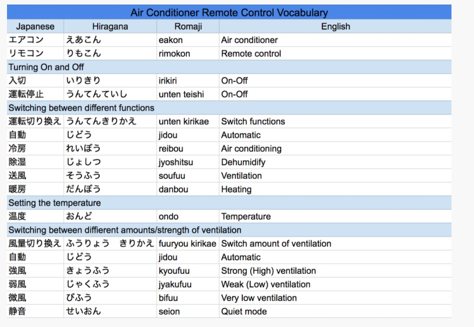
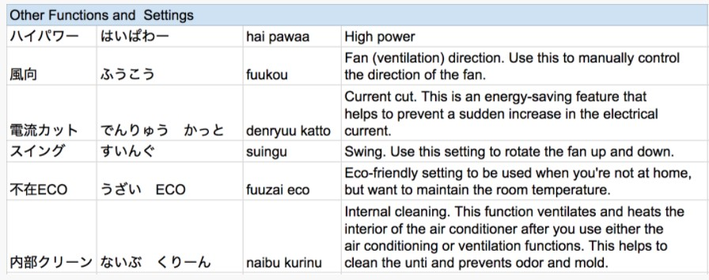

Dormitories
Aikawa Dormitory Information
| Name | Aikawa Dormitory |
|---|---|
| Address |
3302-3 Nakatsu, Aikawa-machi, Aiko-gun, Kanagawa Prefecture, Japan, 243-0303 |
| Tel No. of Resident Assistant | Tel:046-286-3350 / Mobile (Mr. and Mrs. Ogawa): 080-3703-3184 |
| Contact | Atsugi General Affairs Department |
| Facilities |
1st floor: a canteen, a bathtub, a sauna, recreation rooms, a training room, a smoking area, vending machines, parking area Each floor: laundry rooms, washrooms, shower rooms 3rd floor: balcony |
| Moving in/out of the dormitory |
●Period An employee can reside in the dormitory until his/her next payroll day(15th) on/after 26th birthday. (e.g.1) If the employee’s 26th birthday is coming within 2 years after moving in, the employee can reside in the dormitory for 2 years from the day of employment. (e.g.2) (e.g.1) If the birthday is 10th Mar, residing period is until 15th Mar. If the birthday is 20th Mar, residing period is until 15th Apr. (e.g.2) If the employee moved into the dormitory in 2018 at the age of 25, residing period is until 31st Mar in 2020. ●Procedures of moving into the dormitory 1) When arriving at the dormitory, receive the documents (written promise, receipt of room key and check sheet of room equipment) from the resident assistant. 2) Check the room equipment with the resident assistant. Submit the check sheet to the resident assistant after filling in the form. ●Procedures of moving out of the dormitory 1) Inform the resident assistant the day you leave the dormitory and receive the documents (application of moving out, check sheet of room equipment). 2) On the day of leaving, check the room with the resident assistant and submit the check sheet. 3) Return the room key to the resident assistant. *If you move to another residence, you must proceed for the designated formalities. |
| Payment of Rent | JPY20,000 is deducted from monthly salary, calculated in the same way as the payroll system. |
| Other Expenses |
Meal expense and Electricity expense: calculated from the start to the end of the month and deducted from next month salary (electricity: basic charge JPY780 + cost according to the amount of use) Internet (NTT Hikari): for only those applied individually (ask the dormitory manager to apply) NHK reception fee: paid from pooled dormitory membership fee |
| Meals |
●Time Weekdays: 6:30~7:30 (breakfast), 18:00~20:45 (dinner) Saturdays: 6:30~7:30 (breakfast), 18:00~19:30 (dinner) Sundays and Holidays: 9:00~10:00 (breakfast), 18:00~19:30 (dinner) ●Meal expense Breakfast: JPY220 Dinner: JPY380 Meal expenses is deducted from monthly salary. ●How to make an order ・Please fill in the application form at the canteen 7 business days in advance if you take breakfast or dinner. ・If you will cancel your breakfast or dinner after you fill in the application form, please revise the application form by 2 business days in advance. ・If you do not have breakfast or dinner without any cancellation, you are required to pay the cost of meals. |
| Common Bath |
●Time Bath: 18：00~23：00 (except for night shift workers) Bath is unavailable on Wednesday a.m. for cleanup. *Shower rooms are always available. ●Notes ・Please keep the dressing room and the bathroom clean. ・Please take care of your belongings. ・Please do not enter to the bathroom if you are drunk. |
| Monthly Meeting |
Monthly meeting by the residents is held by lead of the dormitory leader. The dormitory leader and General Affairs Department will hold monthly meeting. NHK reception fee is collected and managed by dormitory residents. |
| Laundry Room |
●Time 7：00～23：00 ●Notes ・Please bring your own basket with your name and room number written on. Personal basket needs to be prepared individually. ・Please put your basket right below the washing and drying machine which you use. ・Please remove laundries of the former user from the washing and drying machine to the former user’s basket, in case these are left in the machine. |
| Balcony |
・Please use the balcony of 3rd floor on building B. ・Please mind about the weather by yourself when you hang out to dry your laundry. ・Please clear up your laundry the balcony during the day time. ・Please do not use the balcony for any other purposes but to dry your laundry. |
| Common Rental Items | Iron, futon (bedding) dryer, and vacuum cleaner are available at the resident assistant’s room. To borrow, ask the resident assistant and fill in the record book. |
| Garbage |
・Please divide the garbage according to the indication put on the garbage station in the dormitory by 8:00 a.m. as follows. 1)Burnable (dirty paper, plastic bags of snacks, leftover food etc.) 2)Recyclable A (metal, glass, used paper, glass bottle, used juice carton, plastic tray, dry-cell battery etc.) 3)Recyclable B (can, plastic bottle, used clothes etc.) 4)Recyclable C (plastic tray, packages and plastic products with “プラ” marks. Plastic trash with no “プラ”marks or dirty trash should be put into the Burnable box.) 5)If you want to dump home electronics or large trash (at least one side is over 50cm), please talk to the resident assistant.: |
| Car, Motorcycle, Bicycle |
・Having a private car and commuting by motorcycle is prohibited. (a resident who has a private car must leave the dormitory immediately) ・To park one’s bicycle or motorcycle in the dormitory area, submit the application sheet to the resident assistant and put the designated sticker on it. |
| Post box |
・Key number of your post box is written near the inter phone in your room. (Please do not remove it.) ・If you forget your key number, please contact the resident assistant. |
| Delivery Service Receiving |
・The resident assistant will inform the arrival of a package by writing the consignee’s name on the notice board. If you find your name, ask the resident assistant to receive the package. ・As the resident assistant does not keep refrigerated package, please use delivery time specification service to receive the package by yourself. |
| Delivery Service for Payment on Arrival | ・If you entrust the resident assistant with the cost in advance, the resident assistant will receive the package with payment on arrival instead. Otherwise, the package will not be accepted. |
| Room key | ・The dormitory entrance key and private room key are common. Please make sure to lock your room when you go out. |
| Presence/Absence | ・To confirm your presence/absence at an emergency, please turn over the plate to red side in front of the entrance when you go out of the dormitory. Please turn over the plate to white side when you go back to the dormitory. |
| Cleaning |
・Residents must clean up the air conditioner in the room twice a year on general cleaning (noticed by a poster). To clean up, absorb dust from the filter with a vacuum cleaner or wash the filter and dry well. ・Residents of building B, who use room bathtub, must clean up the overflow at least once a week. |
| Smoking |
・Please do not smoke anywhere but the smoking area under the instruction of the fire station. ・Heat-not-burn tobacco (iQOS, glo, Ploom Tech, etc.) and electronic cigarette (including vaping) are treated in the same way as a cigarette. |
| Recreation Room |
●Time Weekdays : 17：00～22：00 Weekends : 9：00～22：00 ●Notes ・Please do not eat or drink in the recreation room. ・Please make sure to power down the equipment after you use. ・Please wear sneakers for safety when you use a running machine. ・Please concern not to bother other people when you use an audio equipment. |
| Training Room |
・The training room is available as the place for communication. ・The person in charge of the group using the training room needs to get permission from the resident assistant. ・When the residents use the kitchenette, be careful with fire. ・After using the training room, please clean up the room and do not leave any trash. ・The person in charge of the user’s needs to inform the resident assistant when they finishes the use. |
| Notes |
Please note that you are not allowed to do things as follows according to the regulation of the dormitory: ・Do not let non-residents enter the dormitory with no contact in advance. ・Do not put your belongings on the common area (corridors and stairs etc). ・Do not change equipment in your room and in the dormitory. ・Do not cook except in a designated area. ・Do not disturb neighbors (with noises or parking on the road etc). ・Do not own any pets. |
| Damage compensation | If you damage any equipment in the dormitory, you will bear all the cost for repairing. |
Katsuyama Dormitory Information
| Name | Yoshida Dormitory of Makino Milling Machine Co., Ltd. |
|---|---|
| Address |
2-19-9, Shin Nishihara, Fuji Yoshida-shi, Yamanashi 403-0017 |
| Phone number | Tel：0555-22-9650 |
| Caretaker’s name | Mr. Toshiyuki Miyazawa, Mrs. Michiko Miyazawa |
| Facility |
1st Floor Building Common Bathroom (Building A), Laundry Room (Building A & C) Each Floor Toilets & Lavatories (Building A & C) 2nd Floor Canteen Others Fitness Room, Parking Area (Car & Bicycle) |
| Department in charge | Katsuyama General Affairs Section. Tel:0555-20-3600 |
| Rent | 6,000 yen per month: Deducted from salary |
| Other Expenses |
Electricity: Deducted from salary Meal Fees: Deducted from salary TV charge (NHK): Please pay 1,000 yen to the dormitory manager every month Telephone (Only who would like to use): Automatically deducted from personal bank account |
| Check-Out |
-Please announce the date of check-out to the dormitory manager and Katsuyama General Affairs. A notification letter must be submitted to Katsuyama General Affairs. -General Affairs will take care of moving in case you check-out for intercompany transfer. |
| Meal |
●Time Breakfast Weekdays 6:30a.m.-7:30a.m. Saturdays 6:30a.m.-7:30a.m. Sundays 9:00a.m.-10:00a.m. Dinner Weekdays 6:00p.m.-8:45p.m. Saturdays 6:00p.m.-7:00p.m. Sundays 6:00p.m.-7:00p.m. ●Cost Breakfast：220 yen Dinner：380 yen (Meal fees are tallied up in the end of a month and deducted from salary of the following month) ●Application and Cancel -Please fill in the application form in the canteen by writing a circle ”○” by noon to order meals. -Please correct the application form or contact the dormitory（Extension: 7048）by noon when you wish to cancel in advance. -If you forget the cancellation, you must pay the meal fee by yourself as cancellation charge. |
| Electricity | Basic Rate 1,300 yen + Usage x 20 yen per 1kwh |
| Gas |
Usage x 58 yen per 1 Cubic Meter (Both usage is tallied up for the period from the beginning to the end of a month and deducted from salary in the following month) |
| Cleaning Service | Please take your laundry to the designated place on the 1st floor. The cleaning fees are deducted from salary. |
| Bathroom |
A bathroom is equipped in each room. ●Bath time Common Shower Room on 1st floor of Building C: Anytime Common Bathroom on 1st floor of Building A: 5:00p.m.-11：00p.m. (Except for whom working the night shift) |
| Bicycles, MotorvBikes |
-Please submit a notification letter of commuting method and an application for parking permission in the plant to Katsuyama General Affairs to claim commuting expenses and get permission for parking in the company’s property. -Please park vehicles in the designated area by following the instruction of the dormitory manager. |
| Laundry Room | Please use the washing machine equipped in each room. |
| Garbage |
-Combustibles, Nun-Combustibles, Cans & Bottles: Please sort by the type of waste and leave in the designated spot next to the gate. Collection schedule is shown on the bulletin board. -Electrical & Bulky Garbage: Please follow the instruction on the bulletin board. |
| Key |
- The key can be used for both (un)locking the inner door of the entrance and the room. - Make sure to lock the room when you go out. |
| Notification of Existence |
Please turn the plate when you are in/ out of the dormitory. (Turn over to red to show you are out and to white to show you are in) |
| Prohibited Matters |
-No one but your family members can enter the dormitory without permission of the dormitory manager. -Do not leave personal stuffs in public spaces in the dormitory. -Do not redecorate facilities in the dormitory. -Do not cook in the places except for a designated space. -Do not cause any trouble with other residents or neighbors. -Do not take pets in the dormitory. -Do not take other prohibited actions stipulated in the regulation. |
How to use a Washing Machine
Quick run-down
This will vary a lot between different brands and styles of machines, but here’s the rundown for how to use a washing machine like this:
1) Press 入 to turn on the washing machine.
2) Press 水量 to scroll through different water volume amounts to select the appropriate one.
3) Press コース to scroll through different courses to select the appropriate one.
4) Put the appropriate amount of detergent in the washing machine receptacle.
5) Close the lid.
6) Press スタート.
| Japanese Kanji | Japanese Kana | Romaji | English |
| 電源 | でんげん | Dengen | Power |
| 入 | いり | Iri | On |
| 切 | きり/きる | Kiri・Kiru | Off |
| お任せ | おまかせ | Omakase | Automatic |
| すすぎ１回 | すすぎいっかい | Susugi Ikkai | One rinse cycle |
| 香りしっかり | かおりしっかり | Kaori shikkari | Fragrance Saver |
| お急ぎ | おいそぎ | Oisogi | Speed Wash |
| つけおき | つけおき | Tsukeoki | Soak |
| 毛布 | もうふ | Moufu | Blanket |
| 槽カビ予防 | うけかびよぼう | Ukekabiyobou | Washing basin mold prevention |
| 槽洗浄 | うけせんじょう | Ukesenjyou | Washing basin cleaning |
| 送風乾燥 | そうふうかんそう | soufuukansou | Drying |
| 3時間 | さんじかん | sanjikan | Three hours |
| 時間後 | じかんご | jikango | …hours later |
| 予約 | よやく | yoyaku | Timer |
| 残り（約）分 | のこり（やく）ぶん | nokori (yaku) bun | Time remaining (approx.) min. |
| 洗い | あらい | arai | wash |
| すすぎ | すすぎ | susugi | Rinse |
| 脱水 | だっすい | dassui | Dry |
| 行程 | こうてい | koutei | Cycle |
| 水量 | すいりょう | suiryou | Water volume |
| コース | こーす | kousu | course |
| ふたロック | ふたろっく | futarokku | Cover lock |
| チャイルドロック | ちゃいるどろっく | chairudorokku | Child lock |
| スタート | すたーと | sutaato | Start |
| 一時停止 | いちじていし | ichijiteishi | Pause / Temporary stop |
How to Use Air Conditioner Remote Control
A typical remote control for an air conditioning/heating unit in Japan.
To switch between the different functions, press on the 運転切り換え button until the triangle arrow points to the function you want in the LCD window. In the image above, the unit is set to 暖房 (heating)
How to read the characters for the different buttons and settings:
Setting the Timer
To save energy, you may want to set the timer on the air conditioner (so for example, it turns off a few hours after you fall asleep).
The way to set the timer varies by the particular unit, but here is some vocabulary that may be useful.
Other Functions & Settings
Many air conditioning and heating units come with energy-saving and cleaning settings. Here are some common functions:
Toilet in Japan
In Japan, there are different flushing methods depending on the type of toilet.
If it’s a tank type toilet, you can flush the toilet by using the handle to the side of the tank. In public facilities, traditional style Japanese toilets, or toilets that do not have a tank, you can flush the toilet by pulling the lever at the back of the toilet.
There are also models where the toilet can be flushed by pressing a button on the wall, or hovering your hand over a sensor. Like the image below
Modern toilets flush automatically as soon as you get off the toilet seat
How to Use and Read Washlets and Bidets
This function allows you to wash your bits in warm water, and also keeps the toilet seat heated. A power saving function is also included. It instantly heats up the seat and makes the water warmer only when the toilet is in use.
In order to drown out the sound of you going about your business, there is a function that simulates the sound of flushing water. Sometimes this sound automatically starts playing when it detects that somebody has entered the cubicle. Other times, you might have to push a button to start the sound simulator
Renting an Apartment
For those who want to move out from the Dormitory, finding and renting an apartment can be a challenging task for Foreign employees, In this section we have provided what should bear in mind in case interested in finding an apartment.
I. Important Things to Remember about Renting an Apartment in Japan
a. Initial Fees
Foreign employees may be taken by surprise when they learn about various kinds of (often expensive) initial fees required to be paid upfront when renting an apartment in Japan. Among the most common ones are:
1)Security deposit (shiki-kin, 敷金) - 0-2 months of rent
2)Key money (rei-kin, 礼金) - 0-2 months of rent
3)Agency commission fee (chukai tesuryo; 仲介手数料) - 0.5-1.5 months of rent
4)Fire insurance (15,000 yen for two years) - Rent for first month
In addition to the list above, property owners may require other fees including the “key exchange fee,” which ranges from 10,000 to 30,000 yen. As such, it is strongly recommended to confirm what fees entail before making any decision.
b. The Guarantor System
Besides the initial fees, another challenge that most foreign workers face in Japan is finding a guarantor (hosho-nin: 保証人) who can serve as the insurance for your contract with regard to rent and other damage costs. Landlords usually prefer a family member who resides in the country, if none other option could be the Company or a Japanese friend if agrees. If you couldn’t find the unit without the Guarantor requirement consult with HR if necessary.
c. Terminology
①The “R,” “L,” “D,” and “K”
In Japan, room layouts are often expressed in alphabetical abbreviations such as R (bedroom), L (living room), D (dining room), and K (kitchen area). A number to describe the number of bedrooms precedes the alphabetical letters as follows:
● 1R – 1 bedroom with a kitchen unit in it (as also known as ‘studio’)
● 1K – 1 bedroom with a separate kitchen area
● 1DK – 1 bedroom with a dining and kitchen area
● 1LDK – 1 bedroom with a living, dining, and kitchen area
②“Unit Bath” (unitto basu: ユニットバス) vs. “Separate Bath” (separeto basu or separeto: セパレート)
Japanese apartments have two types of bathrooms, “unit baths” and “separate baths.” Sometimes abbreviated to “UB,” a unit bath often comes with a toilet, a sink, and a bathtub in one space, which may sound familiar if you came from Western countries. In contrast, a “separate bath” means that the toilet and the bathtub are separate. Apartments with a “separate bath” tend to be more expensive.
③“Flooring” (furo-ringu: フローリング)
This term refers to wood flooring in contrast to Japanese-style tatami flooring. A Japanese room with tatami flooring is called washitsu (和室) while one with wood flooring is called youshitsu (洋室).
④“Jo” (帖 or 畳)
This term is the most commonly used unit of measure to describe the size of a room. Defined by the number of tatami mats, one unit equals 0.88 meters (2.89 feet) by 1.76 meters (5.77 feet) in the Kanto area including Yamanashi (Note: the size is slightly different in the Kansai area as well as the Nagoya area).
⑤Other Essential Words
The layout below of a typical 1LDK apartment with a 6-jo western bedroom includes some useful words:
How to Find an Apartment
It is customary to find an apartment through an agent in Japan and there are a number of websites that aggregate information about available apartments such as Suumo (http://suumo.jp (Jap Only)) and GaijinPot (https://apartments.gaijinpot.com/en/rent/listing).
Here is a summary of the steps to take:
1. Contact an agent(s) and make an appointment; however, walk-ins are often accepted as well.
Be sure to specify your needs and preferences (e.g. budget, location, floor plan, size, etc.).
2. Schedule an apartment-viewing day.
3. Review a contract and negotiate the initial fees if possible.
Monthly rent and key money are sometimes negotiable (particularly in the off-season: May – August).
4. Decide on a move-in date and sign the contract.
5. Check with the agent about how to have utilities set up.
You will most likely have to call the gas company and arrange for an appointment individually).
Electricity, Gas & Water
IN PROGRESS...
Garbage Disposal
IN PROGRESS...
Postal Services
IN PROGRESS...
Transportation
IN PROGRESS...
Japanese Driver's Licence
IN PROGRESS...
Etiquettes
IN PROGRESS...
Disaster & Emergency Dials
IN PROGRESS...